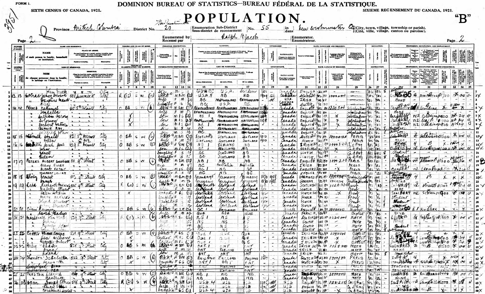

Albert Ernest Peters 1902 - 1982
[ Home ] | [ Calendar ] | [ Surnames Index ] | [ Family History ]The son of Albert Peters (a senior boat pilot) and Mary Hogan, Albert Peters, the fourth cousin once-removed on the father's side of <a href="I1.html">Nigel Horne</a>, was born in New Westminster, British Columbia, Canada on Dec 26, 1902<span class="citation">1,2,3,4</span>.</p><p>Throughout his life, he lived at his birthplace in 1911<span class="citation">6</span>; and at 511 Ninth Street, British Columbia on Jun 1, 1921<span class="citation">2</span>. <p>He died on Nov 29, 1982 in Surrey, British Columbia, Canada<span class="citation">4,5</span>.
Parents
- Capt. Albert Goodrich was born on Nov 4, 1865
- Mary Ellen was born on Feb 28, 1873
Citations
- 1911 Census of Canada Online publication - Provo, UT, USA: Ancestry.com Operations Inc, 2006. .Original data - Library and Archives Canada. Census of Canada, 1911. Ottawa, Ontario, Canada: Library and Archives Canada, 2007. http://www.collectionscanada.gc.ca/databases/census-19
- 1921 Census of Canada Ancestry.com Operations Inc (Marital Status: Single; Relation to Head of House: Son)
- British Columbia, Canada, Birth Index, 1872-1903 Ancestry.com Operations Inc
- British Columbia, Canada, Death Index, 1872-1990 Ancestry.com Operations Inc
- British Columbia, Canada, Death Index, 1872-1992 - Findmypast
- Canada Census 1911 - Findmypast (was the son of the head of the household)
Media
1911 Canada Census

1921 Canada Census

British Columbia, Canada, Birth Index, 1854–1903 Transcription - US-MCV-101185-03458499713911161307
British Columbia, Canada, Death Index, 1872–1992 Transcription - US-MCV-126823-12176507159375754682
Canada Census 1911 - CAN/CENSUS/1911/00516627
British Columbia, Canada, Death Index, 1872–1992 - US/MCV/126823/1217650715937575
Family Tree

Generated by Ged2Site. Last updated on Jul 20, 2025